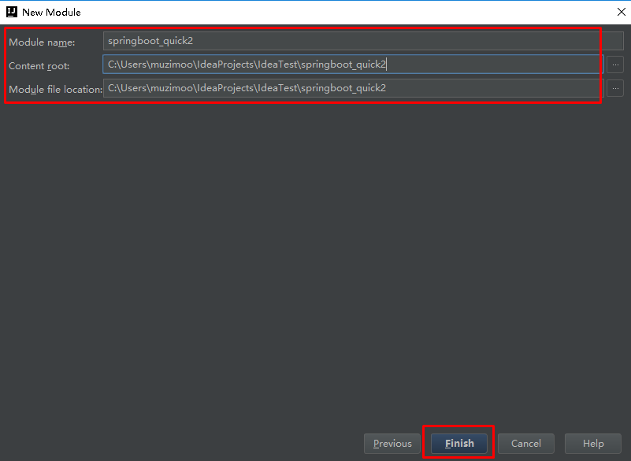
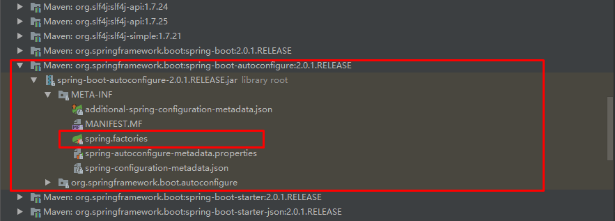
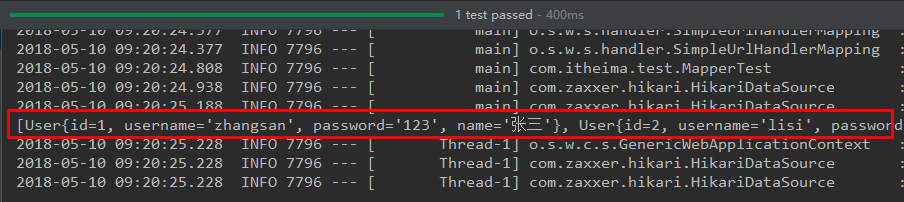

- Spring的优缺点
- SpringBoot的特点
- SpringBoot的核心功能
- SpringBoot的环境
- application.properties、application.yml配置文件的配置
- 集成Mybatis
- 集成Junit
- 集成SpringData JPA
SpringBoot简介
原有Spring优缺点分析
Spring的优点分析
pring是Java企业版（Java Enterprise Edition，JEE，也称J2EE）的轻量级代替品。无需开发重量级的Enterprise JavaBean（EJB），Spring为企业级Java开发提供了一种相对简单的方法，通过依赖注入和面向切面编程，用简单的Java对象（Plain Old Java Object，POJO）实现了EJB的功能。
Spring的缺点分析
虽然Spring的组件代码是轻量级的，但它的配置却是重量级的。一开始，Spring用XML配置，而且是很多XML配置。Spring 2.5引入了基于注解的组件扫描，这消除了大量针对应用程序自身组件的显式XML配置。Spring 3.0引入了基于Java的配置，这是一种类型安全的可重构配置方式，可以代替XML。
所有这些配置都代表了开发时的损耗。因为在思考Spring特性配置和解决业务问题之间需要进行思维切换，所以编写配置挤占了编写应用程序逻辑的时间。和所有框架一样，Spring实用，但与此同时它要求的回报也不少。
除此之外，项目的依赖管理也是一件耗时耗力的事情。在环境搭建时，需要分析要导入哪些库的坐标，而且还需要分析导入与之有依赖关系的其他库的坐标，一旦选错了依赖的版本，随之而来的不兼容问题就会严重阻碍项目的开发进度。
SpringBoot的概述
SpringBoot解决上述Spring的缺点
SpringBoot对上述Spring的缺点进行的改善和优化，基于约定优于配置的思想，可以让开发人员不必在配置与逻辑业务之间进行思维的切换，全身心的投入到逻辑业务的代码编写中，从而大大提高了开发的效率，一定程度上缩短了项目周期。
SpringBoot的特点
- 为基于Spring的开发提供更快的入门体验
- 开箱即用，没有代码生成，也无需XML配置。同时也可以修改默认值来满足特定的需求
- 提供了一些大型项目中常见的非功能性特性，如嵌入式服务器、安全、指标，健康检测、外部配置等
- SpringBoot不是对Spring功能上的增强，而是提供了一种快速使用Spring的方式
SpringBoot的核心功能
起步依赖
起步依赖本质上是一个Maven项目对象模型（Project Object Model，POM），定义了对其他库的传递依赖，这些东西加在一起即支持某项功能。
简单的说，起步依赖就是将具备某种功能的坐标打包到一起，并提供一些默认的功能。
自动配置
Spring Boot的自动配置是一个运行时（更准确地说，是应用程序启动时）的过程，考虑了众多因素，才决定Spring配置应该用哪个，不该用哪个。该过程是Spring自动完成的。
注意：起步依赖和自动配置的原理剖析会在第三章《SpringBoot原理分析》进行详细讲解
SpringBoot快速入门
代码实现
创建Maven工程
使用idea工具创建一个maven工程，该工程为普通的java工程即可


添加SpringBoot的起步依赖
SpringBoot要求，项目要继承SpringBoot的起步依赖spring-boot-starter-parent
<!--所有的springBoot都要继承-->
<parent>
<groupId>org.springframework.boot</groupId>
<artifactId>spring-boot-starter-parent</artifactId>
<version>2.0.1.RELEASE</version>
</parent>
SpringBoot要集成SpringMVC进行Controller的开发，所以项目要导入web的启动依赖
<dependencies>
<dependency>
<groupId>org.springframework.boot</groupId>
<artifactId>spring-boot-starter-web</artifactId>
</dependency>
</dependencies>
编写SpringBoot引导类
要通过SpringBoot提供的引导类起步SpringBoot才可以进行访问
package uestc.zhangkx;
import org.springframework.boot.SpringApplication;
import org.springframework.boot.autoconfigure.SpringBootApplication;
@SpringBootApplication
public class MySpringBootApplication {
public static void main(String[] args) {
SpringApplication.run(MySpringBootApplication.class);
}
}
编写Controller
在引导类MySpringBootApplication同级包或者子级包中创建QuickStartController
package com.itheima.controller;
import org.springframework.stereotype.Controller;
import org.springframework.web.bind.annotation.RequestMapping;
import org.springframework.web.bind.annotation.ResponseBody;
@Controller
public class QuickStartController {
@RequestMapping("/quick")
@ResponseBody
public String quick(){
return "springboot 访问成功!";
}
}
测试
执行SpringBoot起步类的主方法，控制台打印日志如下：
/home/zhangkx/.jdks/openjdk-14.0.1/bin/java -javaagent:/home/zhangkx/.local/share/JetBrains/Toolbox/apps/IDEA-U/ch-0/201.7223.91/lib/idea_rt.jar=34083:/home/zhangkx/.local/share/JetBrains/Toolbox/apps/IDEA-U/ch-0/201.7223.91/bin -Dfile.encoding=UTF-8 -classpath /home/zhangkx/IdeaProjects/springBoot/QuickStart/target/classes:/home/zhangkx/.m2/repository/org/springframework/boot/spring-boot-starter-web/2.0.1.RELEASE/spring-boot-starter-web-2.0.1.RELEASE.jar:/home/zhangkx/.m2/repository/org/springframework/boot/spring-boot-starter/2.0.1.RELEASE/spring-boot-starter-2.0.1.RELEASE.jar:/home/zhangkx/.m2/repository/org/springframework/boot/spring-boot/2.0.1.RELEASE/spring-boot-2.0.1.RELEASE.jar:/home/zhangkx/.m2/repository/org/springframework/boot/spring-boot-autoconfigure/2.0.1.RELEASE/spring-boot-autoconfigure-2.0.1.RELEASE.jar:/home/zhangkx/.m2/repository/org/springframework/boot/spring-boot-starter-logging/2.0.1.RELEASE/spring-boot-starter-logging-2.0.1.RELEASE.jar:/home/zhangkx/.m2/repository/ch/qos/logback/logback-classic/1.2.3/logback-classic-1.2.3.jar:/home/zhangkx/.m2/repository/ch/qos/logback/logback-core/1.2.3/logback-core-1.2.3.jar:/home/zhangkx/.m2/repository/org/slf4j/slf4j-api/1.7.25/slf4j-api-1.7.25.jar:/home/zhangkx/.m2/repository/org/apache/logging/log4j/log4j-to-slf4j/2.10.0/log4j-to-slf4j-2.10.0.jar:/home/zhangkx/.m2/repository/org/apache/logging/log4j/log4j-api/2.10.0/log4j-api-2.10.0.jar:/home/zhangkx/.m2/repository/org/slf4j/jul-to-slf4j/1.7.25/jul-to-slf4j-1.7.25.jar:/home/zhangkx/.m2/repository/javax/annotation/javax.annotation-api/1.3.2/javax.annotation-api-1.3.2.jar:/home/zhangkx/.m2/repository/org/springframework/spring-core/5.0.5.RELEASE/spring-core-5.0.5.RELEASE.jar:/home/zhangkx/.m2/repository/org/springframework/spring-jcl/5.0.5.RELEASE/spring-jcl-5.0.5.RELEASE.jar:/home/zhangkx/.m2/repository/org/yaml/snakeyaml/1.19/snakeyaml-1.19.jar:/home/zhangkx/.m2/repository/org/springframework/boot/spring-boot-starter-json/2.0.1.RELEASE/spring-boot-starter-json-2.0.1.RELEASE.jar:/home/zhangkx/.m2/repository/com/fasterxml/jackson/core/jackson-databind/2.9.5/jackson-databind-2.9.5.jar:/home/zhangkx/.m2/repository/com/fasterxml/jackson/core/jackson-annotations/2.9.0/jackson-annotations-2.9.0.jar:/home/zhangkx/.m2/repository/com/fasterxml/jackson/core/jackson-core/2.9.5/jackson-core-2.9.5.jar:/home/zhangkx/.m2/repository/com/fasterxml/jackson/datatype/jackson-datatype-jdk8/2.9.5/jackson-datatype-jdk8-2.9.5.jar:/home/zhangkx/.m2/repository/com/fasterxml/jackson/datatype/jackson-datatype-jsr310/2.9.5/jackson-datatype-jsr310-2.9.5.jar:/home/zhangkx/.m2/repository/com/fasterxml/jackson/module/jackson-module-parameter-names/2.9.5/jackson-module-parameter-names-2.9.5.jar:/home/zhangkx/.m2/repository/org/springframework/boot/spring-boot-starter-tomcat/2.0.1.RELEASE/spring-boot-starter-tomcat-2.0.1.RELEASE.jar:/home/zhangkx/.m2/repository/org/apache/tomcat/embed/tomcat-embed-core/8.5.29/tomcat-embed-core-8.5.29.jar:/home/zhangkx/.m2/repository/org/apache/tomcat/embed/tomcat-embed-el/8.5.29/tomcat-embed-el-8.5.29.jar:/home/zhangkx/.m2/repository/org/apache/tomcat/embed/tomcat-embed-websocket/8.5.29/tomcat-embed-websocket-8.5.29.jar:/home/zhangkx/.m2/repository/org/hibernate/validator/hibernate-validator/6.0.9.Final/hibernate-validator-6.0.9.Final.jar:/home/zhangkx/.m2/repository/javax/validation/validation-api/2.0.1.Final/validation-api-2.0.1.Final.jar:/home/zhangkx/.m2/repository/org/jboss/logging/jboss-logging/3.3.2.Final/jboss-logging-3.3.2.Final.jar:/home/zhangkx/.m2/repository/com/fasterxml/classmate/1.3.4/classmate-1.3.4.jar:/home/zhangkx/.m2/repository/org/springframework/spring-web/5.0.5.RELEASE/spring-web-5.0.5.RELEASE.jar:/home/zhangkx/.m2/repository/org/springframework/spring-beans/5.0.5.RELEASE/spring-beans-5.0.5.RELEASE.jar:/home/zhangkx/.m2/repository/org/springframework/spring-webmvc/5.0.5.RELEASE/spring-webmvc-5.0.5.RELEASE.jar:/home/zhangkx/.m2/repository/org/springframework/spring-aop/5.0.5.RELEASE/spring-aop-5.0.5.RELEASE.jar:/home/zhangkx/.m2/repository/org/springframework/spring-context/5.0.5.RELEASE/spring-context-5.0.5.RELEASE.jar:/home/zhangkx/.m2/repository/org/springframework/spring-expression/5.0.5.RELEASE/spring-expression-5.0.5.RELEASE.jar uestc.zhangkx.MySpringBootApplication
. ____ _ __ _ _
/\\ / ___'_ __ _ _(_)_ __ __ _ \ \ \ \
( ( )\___ | '_ | '_| | '_ \/ _` | \ \ \ \
\\/ ___)| |_)| | | | | || (_| | ) ) ) )
' |____| .__|_| |_|_| |_\__, | / / / /
=========|_|==============|___/=/_/_/_/
:: Spring Boot :: (v2.0.1.RELEASE)
2020-05-19 15:02:05.316 INFO 14574 --- [ main] uestc.zhangkx.MySpringBootApplication : Starting MySpringBootApplication on zhangkx-PC with PID 14574 (/home/zhangkx/IdeaProjects/springBoot/QuickStart/target/classes started by zhangkx in /home/zhangkx/IdeaProjects/springBoot/QuickStart)
2020-05-19 15:02:05.321 INFO 14574 --- [ main] uestc.zhangkx.MySpringBootApplication : No active profile set, falling back to default profiles: default
2020-05-19 15:02:05.479 INFO 14574 --- [ main] ConfigServletWebServerApplicationContext : Refreshing org.springframework.boot.web.servlet.context.AnnotationConfigServletWebServerApplicationContext@1bd4fdd: startup date [Tue May 19 15:02:05 CST 2020]; root of context hierarchy
WARNING: An illegal reflective access operation has occurred
WARNING: Illegal reflective access by org.springframework.cglib.core.ReflectUtils$1 (file:/home/zhangkx/.m2/repository/org/springframework/spring-core/5.0.5.RELEASE/spring-core-5.0.5.RELEASE.jar) to method java.lang.ClassLoader.defineClass(java.lang.String,byte[],int,int,java.security.ProtectionDomain)
WARNING: Please consider reporting this to the maintainers of org.springframework.cglib.core.ReflectUtils$1
WARNING: Use --illegal-access=warn to enable warnings of further illegal reflective access operations
WARNING: All illegal access operations will be denied in a future release
2020-05-19 15:02:08.013 INFO 14574 --- [ main] o.s.b.w.embedded.tomcat.TomcatWebServer : Tomcat initialized with port(s): 8080 (http)
2020-05-19 15:02:08.065 INFO 14574 --- [ main] o.apache.catalina.core.StandardService : Starting service [Tomcat]
2020-05-19 15:02:08.065 INFO 14574 --- [ main] org.apache.catalina.core.StandardEngine : Starting Servlet Engine: Apache Tomcat/8.5.29
2020-05-19 15:02:08.081 INFO 14574 --- [ost-startStop-1] o.a.catalina.core.AprLifecycleListener : The APR based Apache Tomcat Native library which allows optimal performance in production environments was not found on the java.library.path: [/usr/java/packages/lib:/usr/lib64:/lib64:/lib:/usr/lib]
2020-05-19 15:02:08.280 INFO 14574 --- [ost-startStop-1] o.a.c.c.C.[Tomcat].[localhost].[/] : Initializing Spring embedded WebApplicationContext
2020-05-19 15:02:08.280 INFO 14574 --- [ost-startStop-1] o.s.web.context.ContextLoader : Root WebApplicationContext: initialization completed in 2801 ms
2020-05-19 15:02:08.468 INFO 14574 --- [ost-startStop-1] o.s.b.w.servlet.ServletRegistrationBean : Servlet dispatcherServlet mapped to [/]
2020-05-19 15:02:08.473 INFO 14574 --- [ost-startStop-1] o.s.b.w.servlet.FilterRegistrationBean : Mapping filter: 'characterEncodingFilter' to: [/*]
2020-05-19 15:02:08.474 INFO 14574 --- [ost-startStop-1] o.s.b.w.servlet.FilterRegistrationBean : Mapping filter: 'hiddenHttpMethodFilter' to: [/*]
2020-05-19 15:02:08.474 INFO 14574 --- [ost-startStop-1] o.s.b.w.servlet.FilterRegistrationBean : Mapping filter: 'httpPutFormContentFilter' to: [/*]
2020-05-19 15:02:08.474 INFO 14574 --- [ost-startStop-1] o.s.b.w.servlet.FilterRegistrationBean : Mapping filter: 'requestContextFilter' to: [/*]
2020-05-19 15:02:08.650 INFO 14574 --- [ main] o.s.w.s.handler.SimpleUrlHandlerMapping : Mapped URL path [/**/favicon.ico] onto handler of type [class org.springframework.web.servlet.resource.ResourceHttpRequestHandler]
2020-05-19 15:02:08.922 INFO 14574 --- [ main] s.w.s.m.m.a.RequestMappingHandlerAdapter : Looking for @ControllerAdvice: org.springframework.boot.web.servlet.context.AnnotationConfigServletWebServerApplicationContext@1bd4fdd: startup date [Tue May 19 15:02:05 CST 2020]; root of context hierarchy
2020-05-19 15:02:08.991 INFO 14574 --- [ main] s.w.s.m.m.a.RequestMappingHandlerMapping : Mapped "{[/quick]}" onto public java.lang.String uestc.zhangkx.controller.QuickStartController.quick()
2020-05-19 15:02:08.998 INFO 14574 --- [ main] s.w.s.m.m.a.RequestMappingHandlerMapping : Mapped "{[/error]}" onto public org.springframework.http.ResponseEntity<java.util.Map<java.lang.String, java.lang.Object>> org.springframework.boot.autoconfigure.web.servlet.error.BasicErrorController.error(javax.servlet.http.HttpServletRequest)
2020-05-19 15:02:08.999 INFO 14574 --- [ main] s.w.s.m.m.a.RequestMappingHandlerMapping : Mapped "{[/error],produces=[text/html]}" onto public org.springframework.web.servlet.ModelAndView org.springframework.boot.autoconfigure.web.servlet.error.BasicErrorController.errorHtml(javax.servlet.http.HttpServletRequest,javax.servlet.http.HttpServletResponse)
2020-05-19 15:02:09.035 INFO 14574 --- [ main] o.s.w.s.handler.SimpleUrlHandlerMapping : Mapped URL path [/webjars/**] onto handler of type [class org.springframework.web.servlet.resource.ResourceHttpRequestHandler]
2020-05-19 15:02:09.035 INFO 14574 --- [ main] o.s.w.s.handler.SimpleUrlHandlerMapping : Mapped URL path [/**] onto handler of type [class org.springframework.web.servlet.resource.ResourceHttpRequestHandler]
2020-05-19 15:02:09.217 INFO 14574 --- [ main] o.s.j.e.a.AnnotationMBeanExporter : Registering beans for JMX exposure on startup
2020-05-19 15:02:09.254 INFO 14574 --- [ main] o.s.b.w.embedded.tomcat.TomcatWebServer : Tomcat started on port(s): 8080 (http) with context path ''
2020-05-19 15:02:09.258 INFO 14574 --- [ main] uestc.zhangkx.MySpringBootApplication : Started MySpringBootApplication in 4.895 seconds (JVM running for 5.786)
2020-05-19 15:02:35.040 INFO 14574 --- [nio-8080-exec-1] o.a.c.c.C.[Tomcat].[localhost].[/] : Initializing Spring FrameworkServlet 'dispatcherServlet'
2020-05-19 15:02:35.041 INFO 14574 --- [nio-8080-exec-1] o.s.web.servlet.DispatcherServlet : FrameworkServlet 'dispatcherServlet': initialization started
2020-05-19 15:02:35.067 INFO 14574 --- [nio-8080-exec-1] o.s.web.servlet.DispatcherServlet : FrameworkServlet 'dispatcherServlet': initialization completed in 26 ms
通过日志发现，Tomcat started on port(s): 8080 (http) with context path ‘’
tomcat已经起步，端口监听8080，web应用的虚拟工程名称为空
打开浏览器访问url地址为：http://localhost:8080/quick

快速入门解析
SpringBoot代码解析
- @SpringBootApplication：标注SpringBoot的启动类，该注解具备多种功能（后面详细剖析）
- SpringApplication.run(MySpringBootApplication.class) 代表运行SpringBoot的启动类，参数为SpringBoot启动类的字节码对象
SpringBoot工程热部署
我们在开发中反复修改类、页面等资源，每次修改后都是需要重新启动才生效，这样每次启动都很麻烦，浪费了大量的时间，我们可以在修改代码后不重启就能生效，在 pom.xml 中添加如下配置就可以实现这样的功能，我们称之为热部署。
<!--热部署配置-->
<dependency>
<groupId>org.springframework.boot</groupId>
<artifactId>spring-boot-devtools</artifactId>
</dependency>
注意：IDEA进行SpringBoot热部署失败原因
出现这种情况，并不是热部署配置问题，其根本原因是因为Intellij IEDA默认情况下不会自动编译，需要对IDEA进行自动编译的设置，如下：

然后 Shift+Ctrl+Alt+/，选择Registry

使用idea快速创建SpringBoot项目




通过idea快速创建的SpringBoot项目的pom.xml中已经导入了我们选择的web的起步依赖的坐标
<?xml version="1.0" encoding="UTF-8"?>
<project xmlns="http://maven.apache.org/POM/4.0.0" xmlns:xsi="http://www.w3.org/2001/XMLSchema-instance"
xsi:schemaLocation="http://maven.apache.org/POM/4.0.0 http://maven.apache.org/xsd/maven-4.0.0.xsd">
<modelVersion>4.0.0</modelVersion>
<groupId>com.itheima</groupId>
<artifactId>springboot_quick2</artifactId>
<version>0.0.1-SNAPSHOT</version>
<packaging>jar</packaging>
<name>springboot_quick2</name>
<description>Demo project for Spring Boot</description>
<parent>
<groupId>org.springframework.boot</groupId>
<artifactId>spring-boot-starter-parent</artifactId>
<version>2.0.1.RELEASE</version>
<relativePath/> <!-- lookup parent from repository -->
</parent>
<properties>
<project.build.sourceEncoding>UTF-8</project.build.sourceEncoding>
<project.reporting.outputEncoding>UTF-8</project.reporting.outputEncoding>
<java.version>9</java.version>
</properties>
<dependencies>
<dependency>
<groupId>org.springframework.boot</groupId>
<artifactId>spring-boot-starter-web</artifactId>
</dependency>
<dependency>
<groupId>org.springframework.boot</groupId>
<artifactId>spring-boot-starter-test</artifactId>
<scope>test</scope>
</dependency>
</dependencies>
<build>
<plugins>
<plugin>
<groupId>org.springframework.boot</groupId>
<artifactId>spring-boot-maven-plugin</artifactId>
</plugin>
</plugins>
</build>
</project>
可以使用快速入门的方式创建Controller进行访问，此处不再赘述
SpringBoot原理分析
起步依赖原理分析
分析spring-boot-starter-parent
按住Ctrl点击pom.xml中的spring-boot-starter-parent，跳转到了spring-boot-starter-parent的pom.xml，xml配置如下（只摘抄了部分重点配置）：
<parent>
<groupId>org.springframework.boot</groupId>
<artifactId>spring-boot-dependencies</artifactId>
<version>2.0.1.RELEASE</version>
<relativePath>../../spring-boot-dependencies</relativePath>
</parent>
按住Ctrl点击pom.xml中的spring-boot-starter-dependencies，跳转到了spring-boot-starter-dependencies的pom.xml，xml配置如下（只摘抄了部分重点配置）：
<properties>
<activemq.version>5.15.3</activemq.version>
<antlr2.version>2.7.7</antlr2.version>
<appengine-sdk.version>1.9.63</appengine-sdk.version>
<artemis.version>2.4.0</artemis.version>
<aspectj.version>1.8.13</aspectj.version>
<assertj.version>3.9.1</assertj.version>
<atomikos.version>4.0.6</atomikos.version>
<bitronix.version>2.1.4</bitronix.version>
<build-helper-maven-plugin.version>3.0.0</build-helper-maven-plugin.version>
<byte-buddy.version>1.7.11</byte-buddy.version>
... ... ...
</properties>
<dependencyManagement>
<dependencies>
<dependency>
<groupId>org.springframework.boot</groupId>
<artifactId>spring-boot</artifactId>
<version>2.0.1.RELEASE</version>
</dependency>
<dependency>
<groupId>org.springframework.boot</groupId>
<artifactId>spring-boot-test</artifactId>
<version>2.0.1.RELEASE</version>
</dependency>
... ... ...
</dependencies>
</dependencyManagement>
<build>
<pluginManagement>
<plugins>
<plugin>
<groupId>org.jetbrains.kotlin</groupId>
<artifactId>kotlin-maven-plugin</artifactId>
<version>${kotlin.version}</version>
</plugin>
<plugin>
<groupId>org.jooq</groupId>
<artifactId>jooq-codegen-maven</artifactId>
<version>${jooq.version}</version>
</plugin>
<plugin>
<groupId>org.springframework.boot</groupId>
<artifactId>spring-boot-maven-plugin</artifactId>
<version>2.0.1.RELEASE</version>
</plugin>
... ... ...
</plugins>
</pluginManagement>
</build>
从上面的spring-boot-starter-dependencies的pom.xml中我们可以发现，一部分坐标的版本、依赖管理、插件管理已经定义好，所以我们的SpringBoot工程继承spring-boot-starter-parent后已经具备版本锁定等配置了。所以起步依赖的作用就是进行依赖的传递。
分析spring-boot-starter-web
按住Ctrl点击pom.xml中的spring-boot-starter-web，跳转到了spring-boot-starter-web的pom.xml，xml配置如下（只摘抄了部分重点配置）：
<?xml version="1.0" encoding="UTF-8"?>
<project xsi:schemaLocation="http://maven.apache.org/POM/4.0.0 http://maven.apache.org/xsd/maven-4.0.0.xsd" xmlns="http://maven.apache.org/POM/4.0.0"
xmlns:xsi="http://www.w3.org/2001/XMLSchema-instance">
<modelVersion>4.0.0</modelVersion>
<parent>
<groupId>org.springframework.boot</groupId>
<artifactId>spring-boot-starters</artifactId>
<version>2.0.1.RELEASE</version>
</parent>
<groupId>org.springframework.boot</groupId>
<artifactId>spring-boot-starter-web</artifactId>
<version>2.0.1.RELEASE</version>
<name>Spring Boot Web Starter</name>
<dependencies>
<dependency>
<groupId>org.springframework.boot</groupId>
<artifactId>spring-boot-starter</artifactId>
<version>2.0.1.RELEASE</version>
<scope>compile</scope>
</dependency>
<dependency>
<groupId>org.springframework.boot</groupId>
<artifactId>spring-boot-starter-json</artifactId>
<version>2.0.1.RELEASE</version>
<scope>compile</scope>
</dependency>
<dependency>
<groupId>org.springframework.boot</groupId>
<artifactId>spring-boot-starter-tomcat</artifactId>
<version>2.0.1.RELEASE</version>
<scope>compile</scope>
</dependency>
<dependency>
<groupId>org.hibernate.validator</groupId>
<artifactId>hibernate-validator</artifactId>
<version>6.0.9.Final</version>
<scope>compile</scope>
</dependency>
<dependency>
<groupId>org.springframework</groupId>
<artifactId>spring-web</artifactId>
<version>5.0.5.RELEASE</version>
<scope>compile</scope>
</dependency>
<dependency>
<groupId>org.springframework</groupId>
<artifactId>spring-webmvc</artifactId>
<version>5.0.5.RELEASE</version>
<scope>compile</scope>
</dependency>
</dependencies>
</project>
从上面的spring-boot-starter-web的pom.xml中我们可以发现，spring-boot-starter-web就是将web开发要使用的spring-web、spring-webmvc等坐标进行了“打包”，这样我们的工程只要引入spring-boot-starter-web起步依赖的坐标就可以进行web开发了，同样体现了依赖传递的作用。
自动配置原理解析
按住Ctrl点击查看启动类MySpringBootApplication上的注解@SpringBootApplication
@SpringBootApplication
public class MySpringBootApplication {
public static void main(String[] args) {
SpringApplication.run(MySpringBootApplication.class);
}
}
注解@SpringBootApplication的源码
@Target(ElementType.TYPE)
@Retention(RetentionPolicy.RUNTIME)
@Documented
@Inherited
@SpringBootConfiguration
@EnableAutoConfiguration
@ComponentScan(excludeFilters = {
@Filter(type = FilterType.CUSTOM, classes = TypeExcludeFilter.class),
@Filter(type = FilterType.CUSTOM, classes = AutoConfigurationExcludeFilter.class) })
public @interface SpringBootApplication {
/**
* Exclude specific auto-configuration classes such that they will never be applied.
* @return the classes to exclude
*/
@AliasFor(annotation = EnableAutoConfiguration.class)
Class<?>[] exclude() default {};
... ... ...
}
其中，
@SpringBootConfiguration：等同与@Configuration，既标注该类是Spring的一个配置类
@EnableAutoConfiguration：SpringBoot自动配置功能开启
按住Ctrl点击查看注解@EnableAutoConfiguration
@Target(ElementType.TYPE)
@Retention(RetentionPolicy.RUNTIME)
@Documented
@Inherited
@AutoConfigurationPackage
@Import(AutoConfigurationImportSelector.class)
public @interface EnableAutoConfiguration {
... ... ...
}
其中，@Import(AutoConfigurationImportSelector.class) 导入了AutoConfigurationImportSelector类
按住Ctrl点击查看AutoConfigurationImportSelector源码
public String[] selectImports(AnnotationMetadata annotationMetadata) {
... ... ...
List<String> configurations = getCandidateConfigurations(annotationMetadata,
attributes);
configurations = removeDuplicates(configurations);
Set<String> exclusions = getExclusions(annotationMetadata, attributes);
checkExcludedClasses(configurations, exclusions);
configurations.removeAll(exclusions);
configurations = filter(configurations, autoConfigurationMetadata);
fireAutoConfigurationImportEvents(configurations, exclusions);
return StringUtils.toStringArray(configurations);
}
protected List<String> getCandidateConfigurations(AnnotationMetadata metadata,
AnnotationAttributes attributes) {
List<String> configurations = SpringFactoriesLoader.loadFactoryNames(
getSpringFactoriesLoaderFactoryClass(), getBeanClassLoader());
return configurations;
}
其中，SpringFactoriesLoader.loadFactoryNames 方法的作用就是从META-INF/spring.factories文件中读取指定类对应的类名称列表

spring.factories 文件中有关自动配置的配置信息如下：
... ... ...
org.springframework.boot.autoconfigure.web.reactive.function.client.WebClientAutoConfiguration,\
org.springframework.boot.autoconfigure.web.servlet.DispatcherServletAutoConfiguration,\
org.springframework.boot.autoconfigure.web.servlet.ServletWebServerFactoryAutoConfiguration,\
org.springframework.boot.autoconfigure.web.servlet.error.ErrorMvcAutoConfiguration,\
org.springframework.boot.autoconfigure.web.servlet.HttpEncodingAutoConfiguration,\
org.springframework.boot.autoconfigure.web.servlet.MultipartAutoConfiguration,\
... ... ...
上面配置文件存在大量的以Configuration为结尾的类名称，这些类就是存有自动配置信息的类，而SpringApplication在获取这些类名后再加载
我们以ServletWebServerFactoryAutoConfiguration为例来分析源码：
@Configuration
@AutoConfigureOrder(Ordered.HIGHEST_PRECEDENCE)
@ConditionalOnClass(ServletRequest.class)
@ConditionalOnWebApplication(type = Type.SERVLET)
@EnableConfigurationProperties(ServerProperties.class)
@Import({ ServletWebServerFactoryAutoConfiguration.BeanPostProcessorsRegistrar.class,
ServletWebServerFactoryConfiguration.EmbeddedTomcat.class,
ServletWebServerFactoryConfiguration.EmbeddedJetty.class,
ServletWebServerFactoryConfiguration.EmbeddedUndertow.class })
public class ServletWebServerFactoryAutoConfiguration {
... ... ...
}
其中，
@EnableConfigurationProperties(ServerProperties.class) 代表加载ServerProperties服务器配置属性类
进入ServerProperties.class源码如下：
@ConfigurationProperties(prefix = "server", ignoreUnknownFields = true)
public class ServerProperties {
/**
* Server HTTP port.
*/
private Integer port;
/**
* Network address to which the server should bind.
*/
private InetAddress address;
... ... ...
}
其中，
prefix = “server” 表示SpringBoot配置文件中的前缀，SpringBoot会将配置文件中以server开始的属性映射到该类的字段中。映射关系如下：

SpringBoot的配置文件
SpringBoot配置文件类型
SpringBoot配置文件类型和作用
SpringBoot是基于约定的，所以很多配置都有默认值，但如果想使用自己的配置替换默认配置的话，就可以使用application.properties或者application.yml（application.yaml）进行配置。
SpringBoot默认会从Resources目录下加载application.properties或application.yml（application.yaml）文件
其中，application.properties文件是键值对类型的文件，之前一直在使用，所以此处不在对properties文件的格式进行阐述。除了properties文件外，SpringBoot还可以使用yml文件进行配置，下面对yml文件进行讲解。
application.yml配置文件
yml配置文件简介
YML文件格式是YAML (YAML Aint Markup Language)编写的文件格式，YAML是一种直观的能够被电脑识别的的数据数据序列化格式，并且容易被人类阅读，容易和脚本语言交互的，可以被支持YAML库的不同的编程语言程序导入，比如： C/C++, Ruby, Python, Java, Perl, C#, PHP等。YML文件是以数据为核心的，比传统的xml方式更加简洁。
YML文件的扩展名可以使用.yml或者.yaml。
yml配置文件的语法
配置普通数据
语法： key: value
示例代码：
name: haohao注意：value之前有一个空格
配置对象数据
语法：
key:
key1: value1
key2: value2
或者：
key: {key1: value1,key2: value2}
示例代码：
person: name: haohao age: 31 addr: beijing #或者 person: {name: haohao,age: 31,addr: beijing}注意：key1前面的空格个数不限定，在yml语法中，相同缩进代表同一个级别
配置Map数据
同上面的对象写法
配置数组（List、Set）数据
语法：
key:
- value1
- value2
或者：
key: [value1,value2]
示例代码：
city: - beijing - tianjin - shanghai - chongqing #或者 city: [beijing,tianjin,shanghai,chongqing] #集合中的元素是对象形式 student: - name: zhangsan age: 18 score: 100 - name: lisi age: 28 score: 88 - name: wangwu age: 38 score: 90注意：value1与之间的 - 之间存在一个空格
SpringBoot配置信息的查询
上面提及过，SpringBoot的配置文件，主要的目的就是对配置信息进行修改的，但在配置时的key从哪里去查询呢？我们可以查阅SpringBoot的官方文档
常用的配置摘抄如下：
# QUARTZ SCHEDULER (QuartzProperties)
spring.quartz.jdbc.initialize-schema=embedded # Database schema initialization mode.
spring.quartz.jdbc.schema=classpath:org/quartz/impl/jdbcjobstore/tables_@@platform@@.sql # Path to the SQL file to use to initialize the database schema.
spring.quartz.job-store-type=memory # Quartz job store type.
spring.quartz.properties.*= # Additional Quartz Scheduler properties.
# ----------------------------------------
# WEB PROPERTIES
# ----------------------------------------
# EMBEDDED SERVER CONFIGURATION (ServerProperties)
server.port=8080 # Server HTTP port.
server.servlet.context-path= # Context path of the application.
server.servlet.path=/ # Path of the main dispatcher servlet.
# HTTP encoding (HttpEncodingProperties)
spring.http.encoding.charset=UTF-8 # Charset of HTTP requests and responses. Added to the "Content-Type" header if not set explicitly.
# JACKSON (JacksonProperties)
spring.jackson.date-format= # Date format string or a fully-qualified date format class name. For instance, `yyyy-MM-dd HH:mm:ss`.
# SPRING MVC (WebMvcProperties)
spring.mvc.servlet.load-on-startup=-1 # Load on startup priority of the dispatcher servlet.
spring.mvc.static-path-pattern=/** # Path pattern used for static resources.
spring.mvc.view.prefix= # Spring MVC view prefix.
spring.mvc.view.suffix= # Spring MVC view suffix.
# DATASOURCE (DataSourceAutoConfiguration & DataSourceProperties)
spring.datasource.driver-class-name= # Fully qualified name of the JDBC driver. Auto-detected based on the URL by default.
spring.datasource.password= # Login password of the database.
spring.datasource.url= # JDBC URL of the database.
spring.datasource.username= # Login username of the database.
# JEST (Elasticsearch HTTP client) (JestProperties)
spring.elasticsearch.jest.password= # Login password.
spring.elasticsearch.jest.proxy.host= # Proxy host the HTTP client should use.
spring.elasticsearch.jest.proxy.port= # Proxy port the HTTP client should use.
spring.elasticsearch.jest.read-timeout=3s # Read timeout.
spring.elasticsearch.jest.username= # Login username.
我们可以通过配置application.poperties 或者 application.yml 来修改SpringBoot的默认配置
例如：
application.properties文件
server.port=8888
server.servlet.context-path=demo
application.yml文件
server:
port: 8888
servlet:
context-path: /demo
配置文件与配置类的属性映射方式
使用注解@Value映射
我们可以通过@Value注解将配置文件中的值映射到一个Spring管理的Bean的字段上
例如：
application.properties配置如下：
person:
name: zhangsan
age: 18
或者，application.yml配置如下：
person:
name: zhangsan
age: 18
实体Bean代码如下：
@Controller
public class QuickStartController {
@Value("${person.name}")
private String name;
@Value("${person.age}")
private Integer age;
@RequestMapping("/quick")
@ResponseBody
public String quick(){
return "springboot 访问成功! name="+name+",age="+age;
}
}
浏览器访问地址：http://localhost:8080/quick 结果如下：

使用注解@ConfigurationProperties映射
通过注解@ConfigurationProperties(prefix=”配置文件中的key的前缀”)可以将配置文件中的配置自动与实体进行映射
application.properties配置如下：
person:
name: zhangsan
age: 18
或者，application.yml配置如下：
person:
name: zhangsan
age: 18
实体Bean代码如下：
@Controller
@ConfigurationProperties(prefix = "person")
public class QuickStartController {
private String name;
private Integer age;
@RequestMapping("/quick")
@ResponseBody
public String quick(){
return "springboot 访问成功! name="+name+",age="+age;
}
public void setName(String name) {
this.name = name;
}
public void setAge(Integer age) {
this.age = age;
}
}
浏览器访问地址：http://localhost:8080/quick 结果如下：
注意：使用@ConfigurationProperties方式可以进行配置文件与实体字段的自动映射，但需要字段必须提供set方法才可以，而使用@Value注解修饰的字段不需要提供set方法
SpringBoot与整合其他技术
SpringBoot整合Mybatis
添加Mybatis的起步依赖
<!--mybatis起步依赖-->
<dependency>
<groupId>org.mybatis.spring.boot</groupId>
<artifactId>mybatis-spring-boot-starter</artifactId>
<version>1.1.1</version>
</dependency>
添加数据库驱动坐标
<!-- MySQL连接驱动 -->
<dependency>
<groupId>mysql</groupId>
<artifactId>mysql-connector-java</artifactId>
</dependency>
添加数据库连接信息
在application.properties中添加数据量的连接信息
#DB Configuration:
spring.datasource.driverClassName=com.mysql.jdbc.Driver
spring.datasource.url=jdbc:mysql://127.0.0.1:3306/test?useUnicode=true&characterEncoding=utf8
spring.datasource.username=root
spring.datasource.password=root
创建user表
在test数据库中创建user表
-- ----------------------------
-- Table structure for `user`
-- ----------------------------
DROP TABLE IF EXISTS `user`;
CREATE TABLE `user` (
`id` int(11) NOT NULL AUTO_INCREMENT,
`username` varchar(50) DEFAULT NULL,
`password` varchar(50) DEFAULT NULL,
`name` varchar(50) DEFAULT NULL,
PRIMARY KEY (`id`)
) ENGINE=InnoDB AUTO_INCREMENT=10 DEFAULT CHARSET=utf8;
-- ----------------------------
-- Records of user
-- ----------------------------
INSERT INTO `user` VALUES ('1', 'zhangsan', '123', '张三');
INSERT INTO `user` VALUES ('2', 'lisi', '123', '李四');
创建实体Bean
public class User {
// 主键
private Long id;
// 用户名
private String username;
// 密码
private String password;
// 姓名
private String name;
//此处省略getter和setter方法 .. ..
}
编写Mapper
@Mapper
public interface UserMapper {
public List<User> queryUserList();
}
注意：@Mapper标记该类是一个mybatis的mapper接口，可以被spring boot自动扫描到spring上下文中
配置Mapper映射文件
在src\main\resources\mapper路径下加入UserMapper.xml配置文件”
<?xml version="1.0" encoding="utf-8" ?>
<!DOCTYPE mapper PUBLIC "-//mybatis.org//DTD Mapper 3.0//EN" "http://mybatis.org/dtd/mybatis-3-mapper.dtd" >
<mapper namespace="com.itheima.mapper.UserMapper">
<select id="queryUserList" resultType="user">
select * from user
</select>
</mapper>
在application.properties中添加mybatis的信息
#spring集成Mybatis环境
#pojo别名扫描包
mybatis.type-aliases-package=com.itheima.domain
#加载Mybatis映射文件
mybatis.mapper-locations=classpath:mapper/*Mapper.xml
编写测试Controller
@Controller
public class MapperController {
@Autowired
private UserMapper userMapper;
@RequestMapping("/queryUser")
@ResponseBody
public List<User> queryUser(){
List<User> users = userMapper.queryUserList();
return users;
}
}
测试

SpringBoot整合Junit
添加Junit的起步依赖
<!--测试的起步依赖-->
<dependency>
<groupId>org.springframework.boot</groupId>
<artifactId>spring-boot-starter-test</artifactId>
<scope>test</scope>
</dependency>
编写测试类
package com.itheima.test;
import com.itheima.MySpringBootApplication;
import com.itheima.domain.User;
import com.itheima.mapper.UserMapper;
import org.junit.Test;
import org.junit.runner.RunWith;
import org.springframework.beans.factory.annotation.Autowired;
import org.springframework.boot.test.context.SpringBootTest;
import org.springframework.test.context.junit4.SpringRunner;
import java.util.List;
@RunWith(SpringRunner.class)
@SpringBootTest(classes = MySpringBootApplication.class)
public class MapperTest {
@Autowired
private UserMapper userMapper;
@Test
public void test() {
List<User> users = userMapper.queryUserList();
System.out.println(users);
}
}
其中，
SpringRunner继承自SpringJUnit4ClassRunner，使用哪一个Spring提供的测试测试引擎都可以
public final class SpringRunner extends SpringJUnit4ClassRunner
@SpringBootTest的属性指定的是引导类的字节码对象
控制台打印信息

SpringBoot整合Spring Data JPA
添加Spring Data JPA的起步依赖
<!-- springBoot JPA的起步依赖 -->
<dependency>
<groupId>org.springframework.boot</groupId>
<artifactId>spring-boot-starter-data-jpa</artifactId>
</dependency>
添加数据库驱动依赖
<!-- MySQL连接驱动 -->
<dependency>
<groupId>mysql</groupId>
<artifactId>mysql-connector-java</artifactId>
</dependency>
在application.properties中配置数据库和jpa的相关属性
#DB Configuration:
spring.datasource.driverClassName=com.mysql.jdbc.Driver
spring.datasource.url=jdbc:mysql://127.0.0.1:3306/test?useUnicode=true&characterEncoding=utf8
spring.datasource.username=root
spring.datasource.password=root
#JPA Configuration:
spring.jpa.database=MySQL
spring.jpa.show-sql=true
spring.jpa.generate-ddl=true
spring.jpa.hibernate.ddl-auto=update
spring.jpa.hibernate.naming_strategy=org.hibernate.cfg.ImprovedNamingStrategy
创建实体配置实体
@Entity
public class User {
// 主键
@Id
@GeneratedValue(strategy = GenerationType.IDENTITY)
private Long id;
// 用户名
private String username;
// 密码
private String password;
// 姓名
private String name;
//此处省略setter和getter方法... ...
}
编写UserRepository
public interface UserRepository extends JpaRepository<User,Long>{
public List<User> findAll();
}
编写测试类
@RunWith(SpringRunner.class)
@SpringBootTest(classes=MySpringBootApplication.class)
public class JpaTest {
@Autowired
private UserRepository userRepository;
@Test
public void test(){
List<User> users = userRepository.findAll();
System.out.println(users);
}
}
控制台打印信息

注意：如果是jdk9，执行报错如下：

原因：jdk缺少相应的jar
解决方案：手动导入对应的maven坐标，如下：
<!--jdk9需要导入如下坐标-->
<dependency>
<groupId>javax.xml.bind</groupId>
<artifactId>jaxb-api</artifactId>
<version>2.3.0</version>
</dependency>
SpringBoot整合Redis
添加redis的起步依赖
<!-- 配置使用redis启动器 -->
<dependency>
<groupId>org.springframework.boot</groupId>
<artifactId>spring-boot-starter-data-redis</artifactId>
</dependency>
配置redis的连接信息
#Redis
spring.redis.host=127.0.0.1
spring.redis.port=6379
注入RedisTemplate测试redis操作
@RunWith(SpringRunner.class)
@SpringBootTest(classes = SpringbootJpaApplication.class)
public class RedisTest {
@Autowired
private UserRepository userRepository;
@Autowired
private RedisTemplate<String, String> redisTemplate;
@Test
public void test() throws JsonProcessingException {
//从redis缓存中获得指定的数据
String userListData = redisTemplate.boundValueOps("user.findAll").get();
//如果redis中没有数据的话
if(null==userListData){
//查询数据库获得数据
List<User> all = userRepository.findAll();
//转换成json格式字符串
ObjectMapper om = new ObjectMapper();
userListData = om.writeValueAsString(all);
//将数据存储到redis中，下次在查询直接从redis中获得数据，不用在查询数据库
redisTemplate.boundValueOps("user.findAll").set(userListData);
System.out.println("===============从数据库获得数据===============");
}else{
System.out.println("===============从redis缓存中获得数据===============");
}
System.out.println(userListData);
}
}